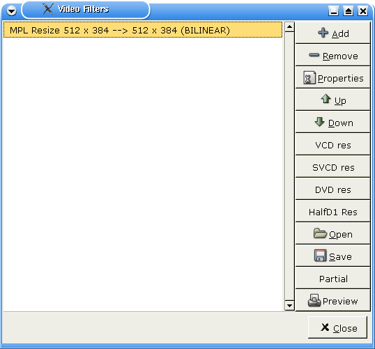

|
Mpeg to Divx tutorial 1.Getting ready This page is an example of encoding a divx avi to a VCD. You will be able to deduce the settings to encode to SVCD. The DVD case is slightly different as avidemux is able to output proper mpeg PS (audio+video) files directly, see DVDAny avi with suitable codecs can be encoded into a VCD. For example Divx+MP3 (note that you need mad to handle the MP3 stream). The VCD export is done in 3 steps : encoding video, encoding audio and muxing. First we will resize the video to fit the video CD spec It means 352*240 for NTSC or 352*288 for PAL After loading the source AVI, popup the video filter window by F1.  Click the button on the right side VCD res. This button will automatically resize the video and add black border to get a proper video size without altering the aspect ratio. Now select the video codec using the vcodec button. Select VCD. Nothing to configure here. Finaly File->Save video and select the video stream file. For example /tmp/videocd.m1v. Now you can read some other avidemux docs and come back a couple of hours later.
The audio is most probably encoded in a format which is not compatible with VCD. So we will re-encode it. Set the audio to process mode F6, and select the audio codec F4.
Select FFmpeg audio codec, and press the configure button. You must enter Stereo and 224 kbps.
Now, we will add some audio filters that may be needed, to that effect press F2. There is three possibilities here :
Select File -> Save audio for example /tmp/videocd.mp2. Re-read avidemux doc, watch a holiday movie, read a book and come back an hour later. 2.After avidemux Now you have your video and audio streams ready. Use mplex like this : mplex -S XXX -f 1 -o /tmp/videocd.mpg videocd.m1v videocd.mp2 The XXX value is to be replace by the size of your CD : 790 for a 80 mn CD. Once this is done you have a valid videocd.mpg file. Time to create a VCD To do a simple VCD without chapters, menus etc.. just do vcdimager -t vcd20 videocd.mpg This will create videocd.cue and videocd.bin, that can be burnt using cdrdao. 3.Bash rules You can do the same operations using the command line avidemux --load input.avi --vcd-res --video-process --video-codec VCD --save /tmp/videocd.m1v --audio-process --audio-normalize --audio-downample --audio-codec MP2 --audio-bitrate 224 --save-uncompressed-audio /tmp/videocd.mp2 --quit That way you can do a fully automatic avi->VCD script |